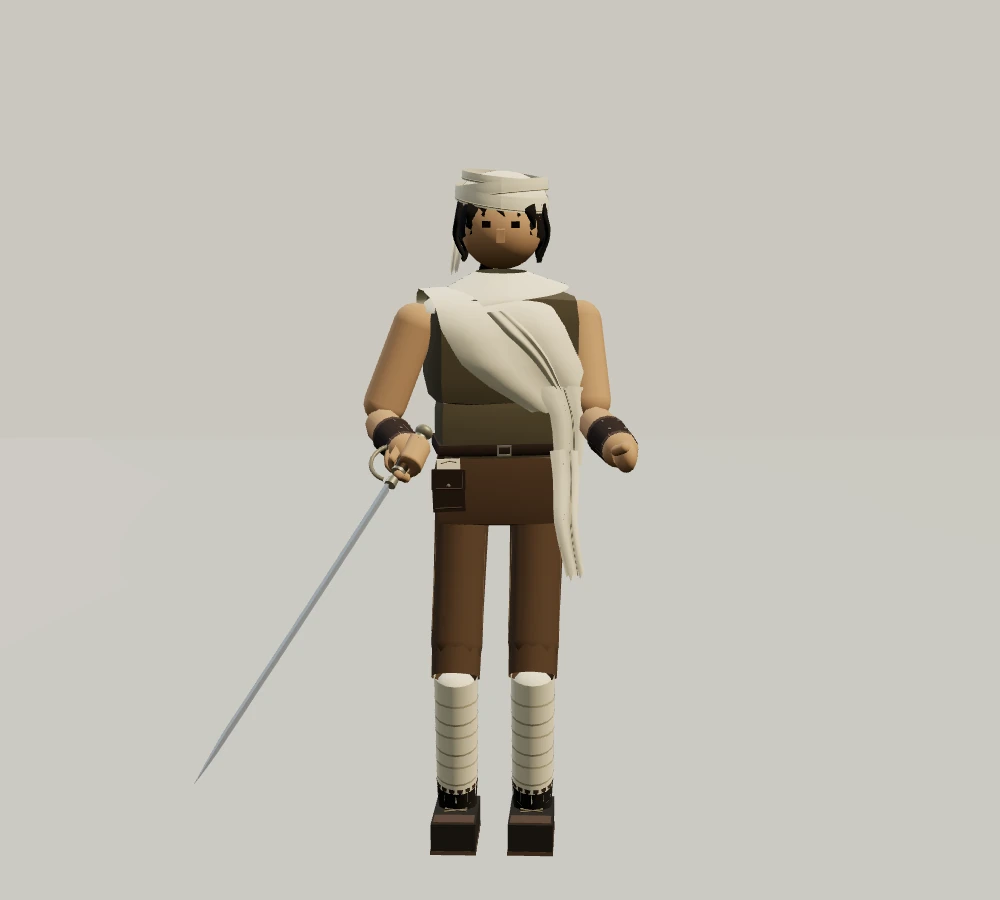
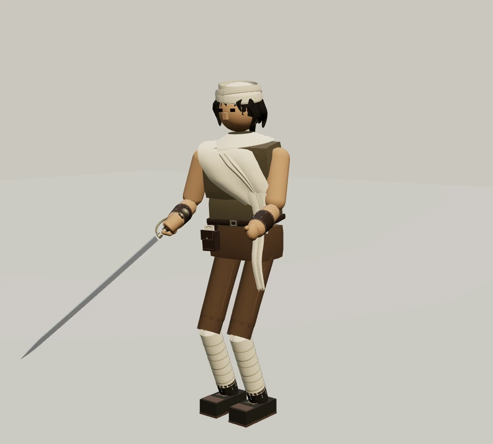
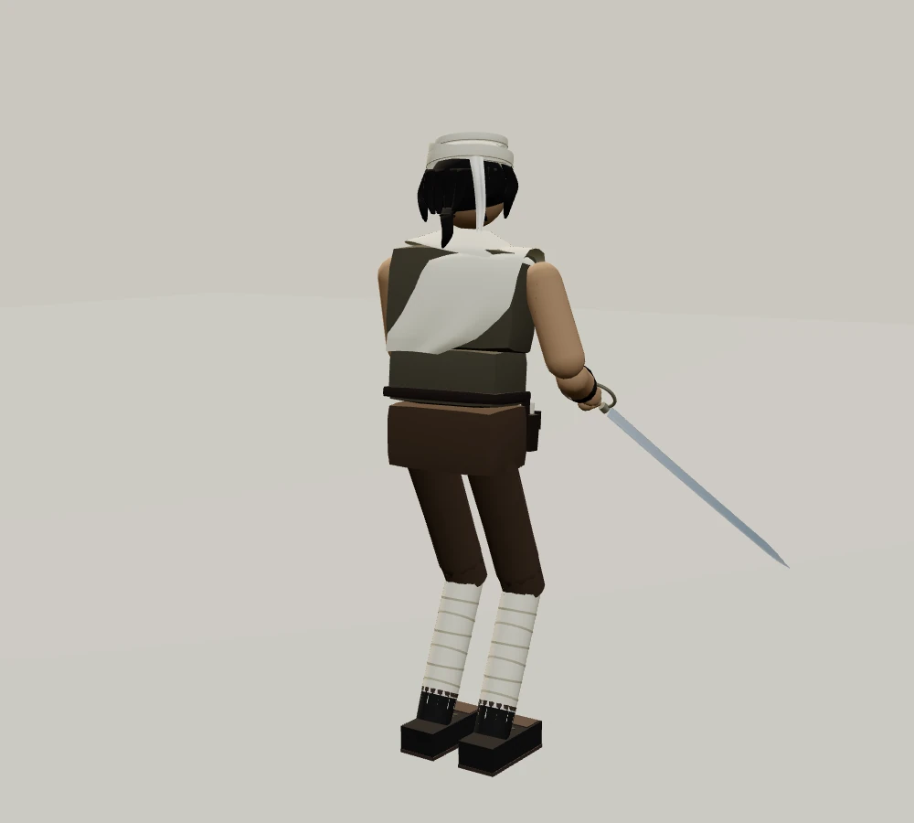

적막 · 새로운 만남
수상한 세르파
길 밖을 조사하는 안내인 · 성별 불명 · 나이 불명

실제 게임 모델 · 외형 관찰용 조명
길을 묻는 여행자에게는 능숙하게 답하지만 자신의 이름과 목적은 밝히지 않는다. 사람이 쉬어 가는 곳보다 오래된 돌의 홈과 물이 끊긴 자리에 오래 머문다.
허리의 기록장에는 지도 대신 같은 기호가 여러 번 그려져 있다. 천으로 싼 작은 주머니 안에 무엇이 들었는지는 보여 주지 않는다.
“그 돌은 건드리지 마.”
흰 머리천 · 긴 숄 · 검은빛 머리 · 구릿빛 피부
갈색 여행복 · 기록장과 표본 주머니 · 세이버
옆모습과 뒷모습 보기


이름은 아직 밝히지 않았다. ‘세르파’는 임시 호칭입니다. 우선 청람잔도에서 만날 수 있습니다.